Là một trong những trường đại học có số lượng CLB đông đảo, ĐH Ngoại Ngữ hứa hẹn đem đến một môi trường rộng mở từ kiến thức chuyên môn đến hoạt động ngoại khóa linh hoạt, sáng tạo.
CLB Karate
Là câu lạc võ giúp các bạn sinh viên có cơ hội được cùng nhau rèn luyện trong các lớp học tự vệ, kỹ năng và quyền pháp Karate, tham gia các giải đấu trong thành phố.
Trang Facebook: Karate Đại học Ngoại ngữ
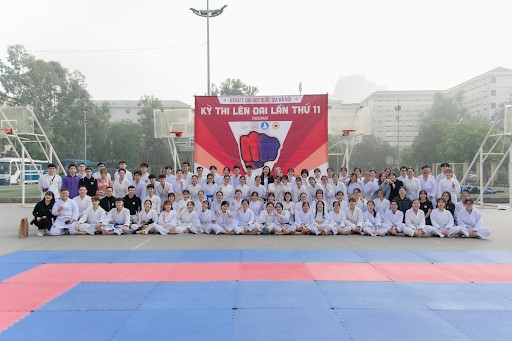CLB Bóng đá S.H.U
Nơi chào đón những người có niềm đam mê với môn thể thao vua, cùng nhau vui chơi, chia sẻ kinh nghiệm, giao lưu kết bạn.
Trang Facebook: CLB Bóng Đá Ulis S.H.U
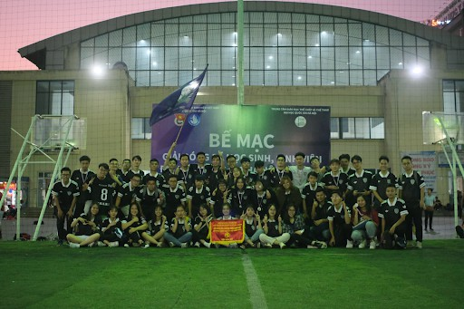CLB Bóng rổ (UBC)
CLB tập hợp những bạn có niềm yêu thích bóng rổ, cùng nhau rèn luyện sức khỏe, thỏa mãn đam mê và xả stress sau những giờ học căng thẳng.
Trang Facebook: CLB bóng rổ Đại học Ngoại Ngữ
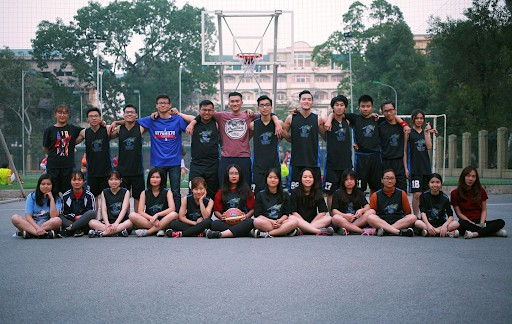CLB Sinh viên nghiên cứu khoa học (CYR)
Nếu bạn là người thích khoa học, muốn tham gia các buổi nghiên cứu, chia sẻ kiến thức cùng các bạn sinh viên khác, tiếp xúc với những thành viên có cùng đam mê, cùng nhau học tập và làm việc thì đây chính là nơi phù hợp nhất dành cho bạn.
Trang Facebook: CYR - CLB Sinh viên Nghiên cứu khoa học - ULIS
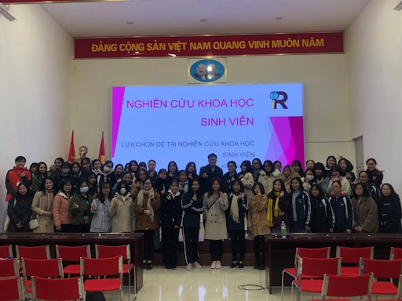GUMMY - ULIS Cheerleading Team
Là CLB nhảy cổ động duy nhất của trường, chào đón những bạn có mong muốn được tham gia các sự kiện/buổi giao hữu/trận đấu náo nhiệt, sôi động.
Trang Facebook: GUMMY - ULIS Cheerleading Team
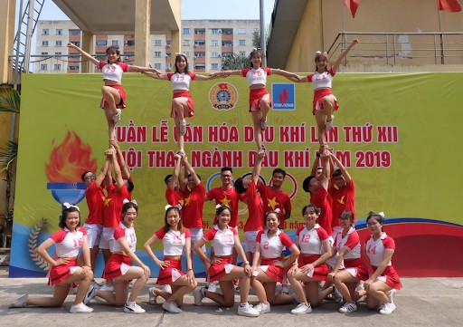CLB Hùng biện (PSC)
Đến với PSC, các bạn sẽ được đào tạo kỹ năng tư duy và hùng biện, có cơ hội giao lưu với các diễn giả có kinh nghiệm, tham gia các cuộc thi chuyên môn.
Trang Facebook: PSC - Câu lạc bộ Hùng biện Trường Đại học Ngoại ngữ
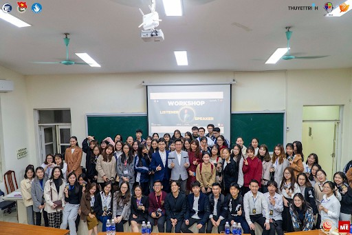CLB Ngoại ngữ xanh (GUC)
Là 1 CLB môi trường, GUC có những mục tiêu như: giữ gìn môi trường ĐH và môi trường sống xung quanh xanh - sạch - đẹp; nâng cao ý thức sinh viên; định hướng sử dụng đồ dùng bảo vệ môi trường,...
Trang Facebook: Câu lạc bộ Ngoại Ngữ Xanh - Green Ulis Club
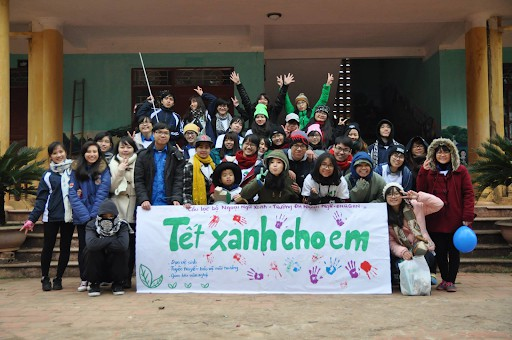CLB Sức trẻ
Là 1 CLB tình nguyện của trường, tổ chức và tham gia các hoạt động từ thiện trên địa bàn Hà Nội
Trang Facebook: CLB Sức Trẻ
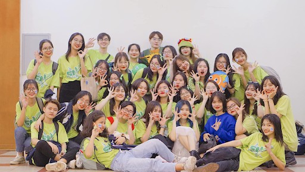CLB Niềm tin ánh sáng (MU)
Cũng là 1 CLB tình nguyện, MU tập trung những hoạt động giúp đỡ người già, người khuyết tật, khiếm thị và trẻ em.
Trang Facebook: CLB NIỀM TIN ÁNH SÁNG - ULIS
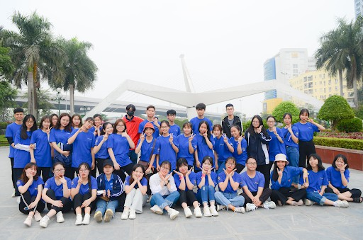CLB Thanh niên vận động hiến máu
Các hoạt động chính của CLB: tuyên truyền, vận động mọi người tham gia hiến máu; tham gia tình nguyện tại các trung tâm, trại trẻ,...
Trang Facebook: CLB Thanh niên vận động hiến máu ĐH Ngoại Ngữ ĐHQG Hà Nội
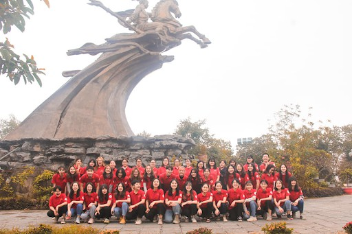CLB Lễ tân - Ngoại giao (URD)
Bên cạnh việc các thành viên có cơ hội giao lưu chia sẻ kỹ năng lễ tân ngoại giao thì URD còn tạo môi trường thân thiện thoải mái để các thành viên dễ dàng học tập, tham gia các hoạt động.
Trang Facebook: CLB Lễ Tân - Ngoại Giao ULIS
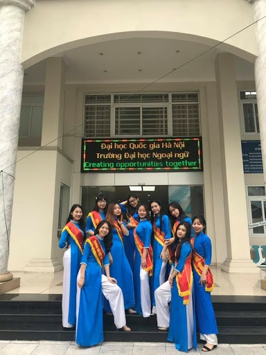CLB Kịch nói tiếng Pháp
Cũng là một CLB thiên về tiếng Pháp, các thành viên giao lưu trau dồi ngôn ngữ và tìm hiểu văn hóa Pháp.
Trang Facebook: CLB Kịch Nói Fragments d'Émotions ULIS - VNU
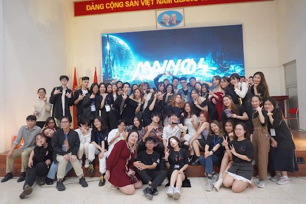CLB Dịch thuật Tiếng Anh (ETIC)
Nơi giúp các bạn yêu thích tiếng Anh nâng cao khả năng ngôn ngữ và tập trung vào rèn luyện khả năng biên/phiên dịch.
Trang Facebook: CLB dịch thuật tiếng Anh ETIC - Đại học Ngoại Ngữ
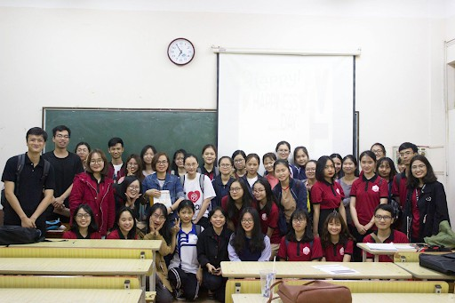CLB Phát triển Kỹ năng Sư phạm (ETDC)
Với tôn chỉ hoạt động “Dare to teacher, never cease to learn”, ETDC được thành lập với mục đích tạo ra môi trường giúp đỡ những thành viên đam mê sư phạm, cùng nhau trau dồi kiến thức và kỹ năng sư phạm.
Trang Facebook: English Teacher Development Club - ETDC
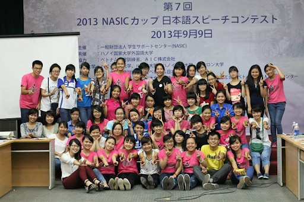CLB Du lịch (UTS)
Nơi dành cho các bạn yêu thích du lịch, chia sẻ và kết nối.
Trang Facebook: UTS - Câu lạc bộ Du lịch Trường Đại học Ngoại Ngữ
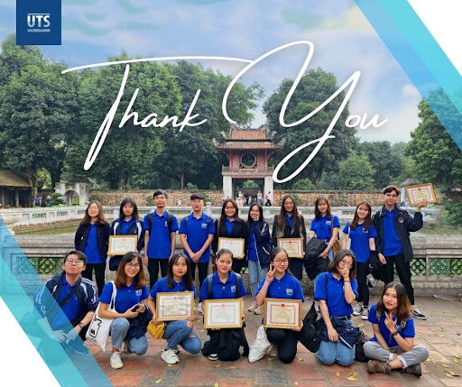CLB Tổ chức sự kiện (CEO)
Nếu bạn mong muốn được tham gia tổ chức các sự kiện, trau dồi kinh nghiệm thực tế thì CEO là nơi bạn không nên bỏ qua đó.
Trang Facebook: Club of Event Organizers of ULIS - VNU
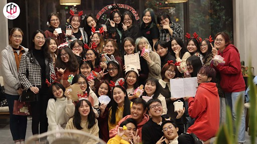CLB Step Up - Dancing Club (SUC)
Nơi tụ họp những bạn đam mê nhảy và muốn được tham gia biểu diễn trên sân khấu, cùng nhau học tập, rèn luyện và tỏa sáng.
Trang Facebook: Step Up Club - Dancing Club
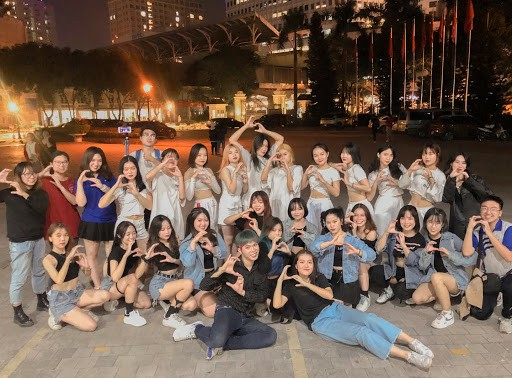CLB UlisYo
CLB chào đón những bạn có niềm yêu thích với Yosakoi và trình diễn.
Trang Facebook: UlisYo - ユーリスよさこい
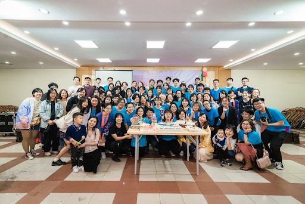Các CLB ngôn ngữ dành cho các bạn sinh viên mong muốn tìm hiểu kiến thức về tiếng nói, con người, văn hóa của các nước:
CLB Tiếng Anh (EC)
Nơi mà bạn có thể trau dồi khả năng ngôn ngữ chuyên môn cũng như kỹ năng giao tiếp ứng xử tiếng Anh.
Trang Facebook: EC ULIS - English Club of University of Languages and International Studies
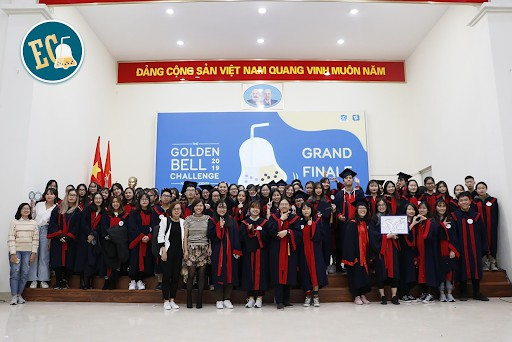CLB Tiếng Ả Rập
Trang Facebook: Câu lạc bộ Tiếng Ả Rập - ULIS
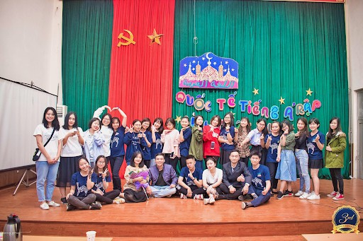CLB Tiếng Nhật (UJC)
Trang Facebook: ULIS - Japanese Club
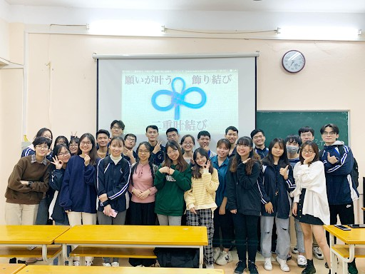CLB Tiếng Pháp (ULEI)
Trang Facebook: CLB Tiếng Pháp Espace Francophone - ULEI
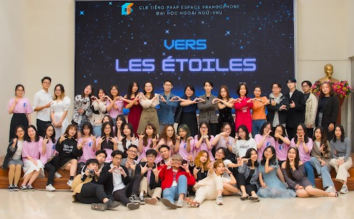CLB Tiếng Trung
Trang Facebook: 汉语社 - CLB tiếng Trung ULIS
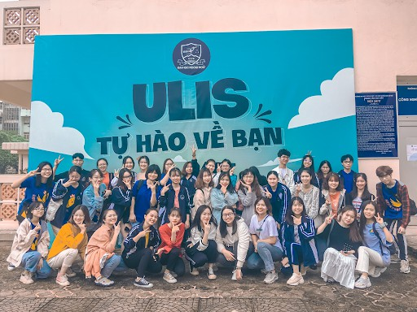CLB Tiếng Nga
Trang Facebook: CLB TIẾNG NGA- ULIS
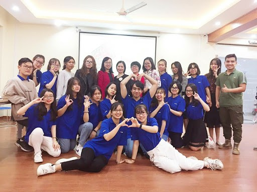CLB Tiếng Đức
Trang Facebook: Deutschklub Ulis - CLB Tiếng Đức
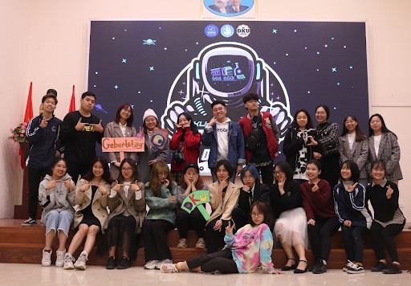
Đăng bởi Area1110